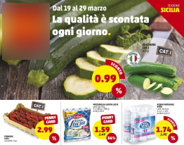

-
CHARMING
RIGHT?
The language we use belongs to the imagery of low cost, wanna-sell-you-everything marketing strategies and TV ads. Since the content comes exclusively from Instagram and we did not generate nor altered it, we are just putting together posts and comments. The exaggerated graphic and stylistic approach allows us to trace back and expose the real intention of marketing campaigns: sell you everything regardless of what it is. In order to achieve our aim, we studied what are the common elements found in big supermarket chains, home appliances superstores etc. flyers and promotional material. The most used graphic gimmicks are specific colors (red, yellow), bold fonts, big prices, the use of a lot of positive, stock images . Once we identified the language as the main problem, we exaggerating it in order to show that the medium is the real issue, while the content has the right to be promoted and shown. If we didn’t act on the medium it would have not been possible to stimulate a reflection on the content.
Once we identified the language as the main problem, we exaggerating it in order to show that the medium is the real issue, while the content has the right to be promoted and shown. If we didn’t act on the medium it would have not been possible to stimulate a reflection on the content.
-
LIKE
ANY OTHER PRODUCT?
Instagram, thorughout time, increased its potential of selling you things through images. The consequence of this sell-you-everything approach brought Instagram to objectify users’ content in order to sell. Instragram has become a showcase of each and every kind of product, even body parts and major medical procedures.
Medical tourism online is advertised with language of mass marketing or product of consumption. Selling medical procedures or computer hardware seems to be the same. The audience could be influenced by the mass marketing language and forget we are talking about medical procedures that bare risks and consequences. All the complexities and consequences are usually hidden because in advertising critical aspects or side effects are not shown. Some of the problems that are not shown include:
• Botched Surgeries: medical procedures gone wrong
• Post-op legal issues
• Illegal treatments in the country of origin (Circumvention Tourism)
Medical treatments and procedures should be promoted carefully and counsciously because of complications they might involve. The sell-you-everyhting approach is not suitable for medical procedures because the person is not considered as a medical patient but it is only considered as a mere customer that could buy items in an online environment. Therefore, promoting medical procedures at the same level as all other marketable products comes with the great risk of banalizing human healthcare. This project starts from medical tourism but it is also about the way services are becoming merchandised through the advertisement language of social media platforms such as Instagram.
-
RESEARCH
Social media contributed in boosting the travel industry (The contribution of social media in boosting the tourism industry - Travel Dosti Etc, 2018), and most kinds of tourism are represented in the social environment. The biggest tourism categories are not the only one growing over time, but also many other specific and peculiar types of tourism gained popularity on the platform. We investigated Instagram hashtags related to tourism in order to understand which category is represented the most on Instagram.
Click on the image and visit the research websiteAmong the categories analyzed on Instagram, the second most important is medical tourism. Medical tourism refers to people traveling abroad to obtain medical treatment, moreover it helps people getting medical treatment at a lower price compared to their country of origin.
ResearchGate.comSurgeries can be dived up into three categories based on the severity of medical procedures. This is very similar to the triage admittance process in the ER:
• non-life-threatening surgeries (cosmetic);
• non-life-threatening with major improvement on life quality;
• life threatening surgeries.RhynoplastyBariatric surgeryOpen heart surgeryThe majority of posts in the medical tourism are related to non-life-threatening surgeries or cosmetic surgeries. Therefore we analyzed how this kind of medical procedures related to medical tourism are marketed on Instagram, what kind of language it is used and what it is advertised when promoting these items.
Click on the image and visit the research website -
PROJECT
The idea is to transpose real advertising campaigns and deals of medical tourism procedures found on Instagram in order to create a digital catalogue. This is a collection of medical procedures that aims to showing real deals and promos on cosmetic surgeries in order to expose its mass marketing approach and objectification. Every bit of information manipulated by the platform serves its scope: selling a product. Therefore even comments under a post can become reviews of a product.

Instagram is the only data source of the project. Each content is clickable and it is linked directly to Instagram posts and comments to make the user exlpore real deals and offers. The user can explore the website starting from body items or countires. This are the two main pillars of medical tourism: healthcare and medical procedures (body) + touristic destination abroad (countries).
We collected data from Instagram following a protocol: we looked for posts and stories that contained promos, deals and offers related to medical procedures. Then we created clusters based on body parts and countries in which the surgeries take place. Finally we narrowed down the selection process to 8 body parts and 6 countries.
These treatments are only made possible by traveling. It is essential to make people realize where in the world they should travel in order to get the surgeries. This is why you will always find interactive maps at every step of the website that shows you where the clinics are located.
-
TEAM